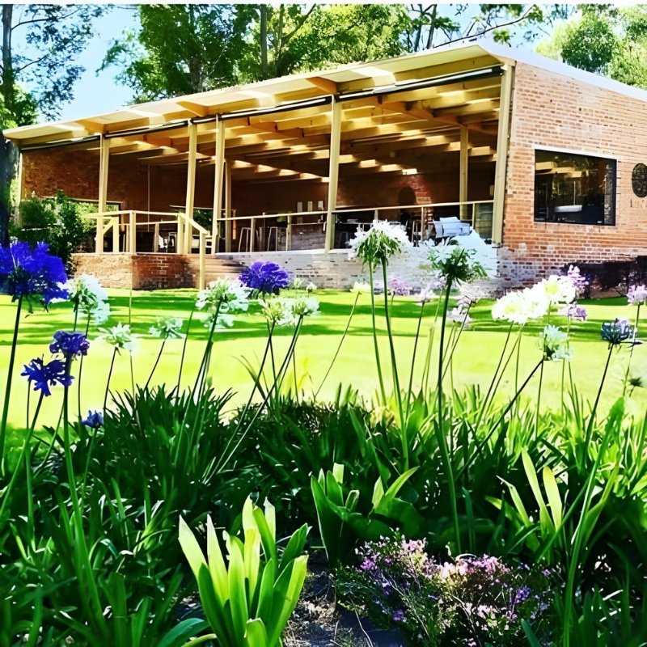
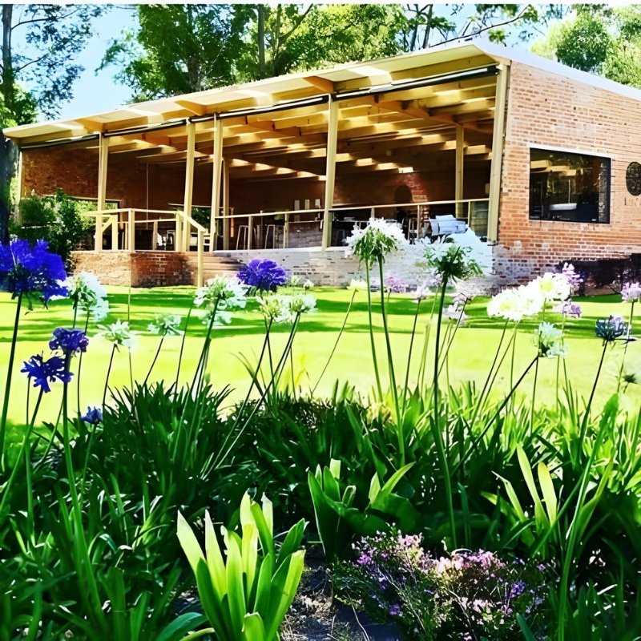

As all great stories do, this one begins with a journey. Laura and Philip Harvey spent years sailing the world as a family, chasing horizons and collecting experiences in ports from the Caribbean to the Mediterranean.
What they were really collecting, though they didn't know it yet, was a palate. All those meals in all those places—the local wines, the regional ingredients, the way food and drink express the character of a landscape—were shaping something. A shared love of flavour that would eventually need a home.
They found it in Harkerville, in the green hills between Plettenberg Bay and Knysna, where a seven-hectare property offered views across to the Tsitsikamma mountains and neighbours that included the Knysna Elephant Park. When they dropped anchor here, they called it Luka—and set about turning their years of wandering into something rooted.
The Terroir
The Garden Route isn't traditional wine country. The established winelands lie hours to the west, in the valleys around Stellenbosch and Franschhoek. But the Plettenberg Bay district, granted Wine of Origin status in 2006, has something the traditional regions don't: the mildest climate in South Africa, and arguably the second mildest in the world.
Wedged between the warm Indian Ocean and the dramatic mountain ranges, this stretch of coastline produces wines with a character all their own. The mornings are cool, the afternoons moderated by sea breezes, the winters mild. It's been scouted, somewhat ambitiously, as the future "Champagne District" of South Africa.
Luka's 1.5 hectares of Sauvignon Blanc thrive in these conditions. The vinification and bottling happens at nearby Bramon Wine Estate under the supervision of Anton Smal, a winemaker of Villiera acclaim who has become genuinely excited by the diversity of flavours this terroir produces.

The Philosophy
Sailing taught the Harveys something about living lightly on the planet. You can't ignore your environmental impact when your home is a small vessel surrounded by ocean. That consciousness has shaped Luka from the beginning.
The farm has embraced biodynamic principles. Solar panels help power the operation. Sustainability isn't a marketing angle here—it's a continuation of the values that guided the family when they were still at sea. Their Mandala logo, with its interconnected elements, tells this story through imagery: every element has a connection, an emotion, a meaning.
"The story has evolved over time, bringing us to this beautiful interruption which is Luka Vineyards. We look forward to sharing it with you."
The Experience
Luka is not a grand wine estate. There's no sweeping driveway or imposing manor house. What there is: a tasting deck with views that make it hard to concentrate on the wine; a café where Chef Richie prepares seasonal dishes from locally sourced ingredients; a small farm shop selling regional products; and a warmth of welcome that feels genuinely personal.
The café serves breakfasts and lunches, with a menu that changes daily depending on what's available. Picnics can be enjoyed on the lawn in front of the restaurant—gourmet boxes brimming with treats paired specifically to the award-winning wines. The setting is peaceful enough that elephants and zebras from the neighbouring park sometimes appear on the horizon.
 

The Wine
Luka's Sauvignon Blanc has earned awards that would make far larger estates envious. It's a wine that reflects its unusual terroir: crisp and refreshing, with the complexity that comes from careful, small-batch production and a genuine connection to place.
The tasting room offers an exploration not just of Luka's own wines but of the broader Plett Winelands region—eighteen vineyards now, most producing Sauvignon Blanc and Méthode Cap Classique sparkling wine. Quality is considered on par with New Zealand's renowned Marlborough estates. The wine route is young but ambitious.
For the Harveys, Luka represents what they call "the most beautiful interruption in the busyness of life." It's an apt description not just of the vineyard, but of the experience of visiting it. Time slows down here. The views demand attention. The wine rewards it.
The Future
The Plett Winelands are still being discovered. Most visitors to the Garden Route don't realize there's serious wine being made here—their mental map places vineyards further west. But word is spreading, and estates like Luka are leading the way.
For a family that spent years crossing oceans, this small patch of Garden Route hillside has become the most meaningful destination of all. They've traded sail for soil, but the spirit of exploration remains. Each vintage is a new voyage, each season brings new discoveries, and the welcome extended to visitors carries all the warmth of fellow travellers meeting on the road.
Visiting
Location: HKV80 Harkerville, 500m off the N2 between Plettenberg Bay and Knysna (near Knysna Elephant Park)
Hours: Open daily for tastings, breakfasts, and lunches
Offerings: Wine tastings, gourmet picnics, seasonal café menu, farm shop
Contact: Laura on 076 575 4768 | lukavineyards.co.za
Note: Small to medium dogs welcome on leads (outside service only). Child-friendly with play area. Wheelchair accessible.